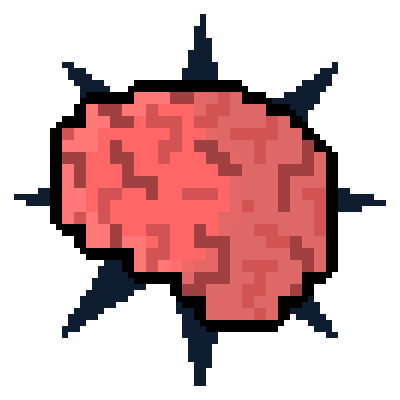

Skip to main content
Behavioral and causal evidence for object-based scene recognition in visual cortex (2026)
Preprint

Marco Gandolfo
Home
News
Publications
CV
Resources
MakeHuman Scripting
R
RTutorials
R functions - collection
Dprime and SDT
Outliers
Image processing in R
AUROC2R - Metacognitive Sensitivity
Visualise FFT spectra
Video Processing in R
Basics of TMS
Stimuli
Online Experiments
Boundary Extension and Depth of field
Contact me
Resources
MakeHuman
R functions and tutorials
TMS Basics
Stimuli